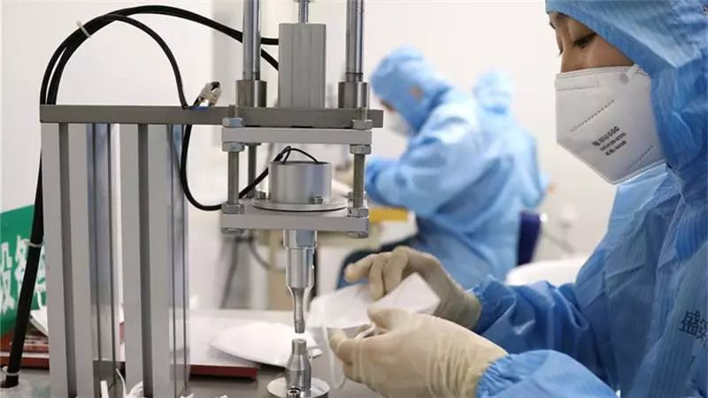

口述实录 | 为什么我要当志愿者接送病人和医生？
原文链接 备份链接 防护和消毒还是很重视的，每送一次，全车消毒一次。 口 述 | 尹 达 整 理 | 黄 祺 我叫尹达，现在是武汉龙安社区的一名志愿者司机。 我的工作是保险销售，疫情发生之前，我一般每天一早去公司，然后出门拜访客户。如果去 …
虽然我自己是公务员，但我客观地评价，在这次抗击疫情的过程中，我们国家的这台大的机器，在应对突发危机的时候，运转起来还是很不错的。
口述 | 徐 理（化名）
整理 | 周 洁
我是一名普通的基层公务员，今年疫情发生后，被征调进入当地的指挥部协助工作。进入指挥部之前，我也一直以为政府是万能的，可以调动所有资源，但进了指挥部以后，我才知道，政府需要依靠群众的力量。
一个艰难的决定
年三十中午，我们开了紧急会议，紧急到什么程度呢？我当时在家吃中饭，电话过来说要开会，意思是你饭先别吃了马上去，然后我什么都来不及带，第一时间赶到了开会的地方。
我们这里是一个旅游城市，所以征用了一个游客中心来开这个紧急会议。当时我还不清楚疫情到了一个什么程度，也没有戴口罩。当天我们讨论的重点是，是否要关闭全市的旅游场所，尤其是一些寺庙。因为很多信众包括游客，都会在年三十的晚上和初一到寺庙里烧香祈福。这就依赖于指挥部对于疫情形势的研判，对于政府来说，既不能把一个大事当做小事办，把问题看轻了，也不能一点小事就大操大办，咋咋呼呼，掌握中间这个度其实是很困难的。
而且，这也是一个艰难的决定，作为旅游城市，如果关闭旅游场所，经济势必要受到影响，而旅游场所一旦关闭，想要再起来难度很大；另一方面，在如此之短的时间里，如何做好景区的经营者、寺庙宗教界人士的思想工作还有广大信众和游客的劝说工作，也是考验工作能力的一环。
不得不说，我们的指挥部还是很果敢的，会议决定，马上暂时关闭各大旅游场所，同时做好宣传工作，让尽可能多的人知道这个消息，指挥部还安排了一批人手在各大景区，对那些不知情况来到景点的游客做相应的解释工作，在我看来，这么短的时间里，指挥部的各项决定和安排已经非常细致了。
现在再回过头来看这个决定，真的是太英明了。如果我们当天没有把旅游景区关闭，那么势必就会导致很多游客、信众聚集，后果不堪设想。
这个决定也受到了老百姓的肯定。有一天我叫滴滴的时候，司机不知道我是政府公职人员，但我们聊着聊着聊到这个事情，他说这次我们政府做得不错，市里的确诊病例到现在都是3个，保持了很多天没有再新增，而且这3例都是输入型病例。从别人的嘴里听到对政府的肯定，我的心里真的挺开心的。
政府也不是万能的
年初二的时候，我被正式调入指挥部，原因是我们指挥部物资全线告急，要求征集采购线索。我所在的单位平时跟外界的沟通比较多，于是就让我进入采购部，准确地说，是做一名志愿者，负责甄别一些采购的线索，推进采购的流程。
其实我跟很多人一样，之前以为政府是无所不能的，一个行政命令下去，怎么可能买不到口罩防护服呢？但真的参与到这个工作里来，我就理解了。
就我们市而言，我们本身是没有这些医疗物资的生产厂家的，而有生产厂家的当地政府，优先征用了厂家的物资，满足本地需要，我们就买不到医疗物资了。我相信在这之前，指挥部已经动员了一切行政资源去采买，但是物资真的很紧缺，所以我才被征调，加入进来做这个海外的采购。

我也相信，这个问题很多跟我们一样的地级市或者县级市也都遇到了，所以遇到政府发布求助信息，大家不要第一时间质疑政府的能力，政府也不是万能的。
一开始我也吃不准我是不是能帮上忙，就把政府需要大家提供采购信息的帖子发到了朋友圈，结果很多人给我回复，令我既惊喜又感动。工作开展起来之后，我们还是遇到了不少困难。首先就是我们对于国际采买并不熟悉，第二个我们不知道需要什么样的物资，第三个我们也不懂语言，另外我们对于航空海关、国际交付等等政策流程都不了解。

但这期间，很多很多人自发地加入到我们的队伍里来。我们还有一个群，说实话，群里很多人跟我都只是认识，或者是工作关系，并没有什么交情，但是当我发出了请求后，很多人给我提供线索，而且有些线索需要深挖跟进，他们又主动承担，继续追踪下去，很多不认识的人都在这个过程中成了志愿者，不断帮我们核实线索的真假、询价、报关的流程、航空公司的联络等等，还有文件的翻译，这些工作都是一些我并不认识的志愿者在默默承担，这个过程里我很多次都被感动到，我觉得不光是我在做这个事情，很多中国人都想在这个时候帮助自己的祖国、自己的家乡，让你觉得朋友无处不在。
举一个例子，我们有一单美国的采购，已经联系好货物了，但是遇到物流的问题。如果按照普通的快递，到货起码要一个月以后了，所以需要另辟蹊径。我们就找了几大航空公司的老总，其实我跟他们并不认识，联系方式也是辗转而来，但电话打过去，对方一听我们是这个事情，完全没有任何官腔，就算不能给予我们直接的帮助，也会想办法给我们提供别的渠道，告诉我们怎么办，尽力来促成这件事。
* *
*
除了联系空运的班机之外，我们还需要找到人去当地工厂提货，直接送到机场。很幸运，我们找到了一个愿意帮助我们的当地人，可能是美籍华裔，他的身份我不清楚，但他甚至主动提出愿意承担工厂到机场之间的物流费用。目前，这单货物已经在来的路上，希望它能顺利运到我们这里，交到医护人员的手中。
当然了，海外采购并不都是那么顺利。粗略算算，大概我们收到了100条采购线索里，只有10条是有效的线索，再继续追踪下去，可能只有一单能成，甚至一单都成不了。我们有过很多次失败的采购，甚至到了最后一步被厂家跑单的也有，这个时候我们来不及沮丧和愤怒，也来不及追究背后的原因，因为我们急着寻找下一个新的可能。
而在这个不断寻找，不断拥有希望又伴随着失望的过程里，我最想感谢的，还是这些默默无闻一直帮助我们的志愿者。
我们政府的工作人员日以继夜，努力工作，还可以说是使命担当，但志愿者是没有报酬纯粹出于本心的，很多次海外的消息过来，都是深夜，但每次我们把国外的材料发进群里，两个小时内马上就能收到翻译好的材料。经过这次事件，我觉得我们国家的志愿者精神真的有了很大的进步，我们的国民素质、爱国精神，我都真真切切地感受到了。
最后，我也希望通过自己的经历告诉大家，虽然我自己是公务员，但我客观地评价，在这次抗击疫情的过程中，我们国家的这台大的机器，在应对突发危机的时候，运转起来还是很不错的。我看到每个人都在自己的岗位上发挥自己的作用，尤其是基层的工作人员，工作是非常辛苦的，并不是那种不知所措、不敢担当的无序状态。也希望大家能对政府工作人员多一些理解，多支持他们的工作！

征集令
《新民周刊》现面向全国征集新冠肺炎采访对象和真实故事：
如果你是参与抗击新冠肺炎疫情的医护人员或其家属，我们希望聆听你的“战疫”故事，也希望传达你的诉求。
如果你是确诊、疑似患者本人或家属，我们希望了解你和家人如何“抗疫”的过程，让外界了解你的真实经历。
如果你是疫情严重地区的普通市民，我们希望展现你的乐观，并倾听你所需的帮助。
如果你是公共服务人员或各类捐助者，我们希望看到你的“最美逆行”，记录下你的无私。
……
抗击新冠肺炎疫情，我们诚征对疫情了解的社会各界人士，提供相关线索，说出你的故事，让我们用新闻留存这一切。
《新民周刊》新冠肺炎线索征集值班编辑联系方式（添加时请简要自我介绍）：
周一：应 琛 微信号：paulineying0127
周二：金 姬 微信号：gepetta
周三：黄 祺 微信号：shewen-2020
周四：周 洁 微信号：asyouasyou
周五：孔冰欣 微信号：kbx875055141
周六：吴 雪 微信号：shyshine1105
周日：姜浩峰 微信号：jianggeladandong
新闻是历史的底稿，你们是历史的见证者。
期待你的故事、你的线索！

▼
大家还都在看这些
▼
转载请在评论区留言，获得授权！
转载时，须注明作者、出处和微信号


原文链接 备份链接 防护和消毒还是很重视的，每送一次，全车消毒一次。 口 述 | 尹 达 整 理 | 黄 祺 我叫尹达，现在是武汉龙安社区的一名志愿者司机。 我的工作是保险销售，疫情发生之前，我一般每天一早去公司，然后出门拜访客户。如果去 …
原文链接 备份链接 图片来源：视觉中国 记者 ：赵孟 “ 面对价格飞涨、临时毁约，甚至“无间道”抢购等突发情况，财政部专门发文要求各地简化采购程序，建立采购“绿色通道”。在专家看来，此举有望逐步理顺海外采购工作，有效帮助国内医护物资供应。 …
原文链接 备份链接 我想说，疫情当前，不光是我们一线工作人员，而是所有人都在努力。 口述 | 孙明沁 整理 | 应 琛 1月28日晚，记得那是一个雨夜，我刚刚登临检疫完一架航班，回到上海浦东国际机场海关值机处的办公地，在门口正好遇上两位 …
原文链接 备份链接 我和子岚说，在这种黑暗的时候，哪怕一点点的善意，都能给别人带来温暖。哪怕只有一点点的光，也要努力去发出来，去照亮黑暗。 口述 | 余女士 整理 | 刘朝晖 我是子岚的妈妈，因为在快手上播出自己作为武汉市民日常抗疫生活 …
原文链接 备份链接 《中国经济周刊》记者 谢玮丨北京报道 2月13日，据新华社消息，日前，中共中央决定：应勇同志任湖北省委委员、常委、书记，蒋超良同志不再担任湖北省委书记、常委、委员职务。 同日，马国强不再担任湖北省委副书记、武汉市委书 …